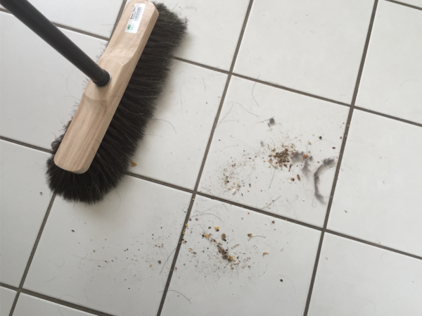

Lean auf den Punkt gebracht
Die Arbeit im Büro soll fließen. Stetig, zügig sollen alle Aufgaben erledigt werden. Dann ist die Produktivität hoch und der Stress gering. Darum geht es beim Lean Digital Office im Kern.
Aber was bringt die Arbeit immer wieder ins Stocken? Verschwendung, Schlacken, Plaque. Das habe ich schon in einem früheren Artikel erklärt.
So richtig die Darstellung in dem Artikel aber auch ist, ich war noch nicht zufrieden mit der Definition von Verschwendung. Die sieben kanonischen Verschwendungsarten – z.B. Materialbewegung, Bestände – lassen sich zwar alle nicht nur in industrieller Produktion, sondern auch im Büro finden. Wirklich einfach machen sie das Verständnis von lean production jedoch nicht, finde ich.
Lean in drei Worten
Deshalb bin ich nochmal auf die Suche nach einer knackigeren Definition für Verschwendung bzw. den Begriff „Lean“ gegangen. In einem Artikel von Ralf Westphal bin ich dabei über einen interessanten Blickwinkel gestolpert. Er bringt lean production so auf den Punkt:
Aufgaben erledigen ohne
- Abweichungen
- Verzögerungen
- Wiederholungen
Zu dieser Definition hat ihn eine Radioserie der BBC inspiriert: Just a Minute. In der geht es auch um eine Form von Produktion: Die Mitglieder eines Rateteams – oder besser: Referententeams – sollen jeweils eine Minute lang zu einem vom Moderator vorgegebenen Thema extemporieren. Das allein ist natürlich schon eine Herausforderung, doch es wird noch kniffliger! Die „Minireferate“ müssen nämlich frei von Abweichung (engl. deviation), Verzögerung (engl. hesitation) und Wiederholung (engl. repetition) sein.
Lean hören
Versuchen Sie es selbst einmal! Können Sie aus dem Stehgreif z.B. eine Minute flüssig über das Thema „Mikrowellenherd“ sprechen? Flüssig, d.h. zügig, stetig, die ganze Zeit maximal produktiv im Hinblick auf das Thema, also einem Zuhörer kontinuierlich neue Informationen (oder Emotionen) liefernd. Ich finde das jedenfalls sehr schwierig.
Hören Sie hier, was das Team von „Just a Minute“ aus dem Thema gemacht hat:

Wer das kann – da stimme ich mit Ralf Westphal überein –, der hat verinnerlicht, was lean production bedeutet. Denn überlegen Sie einmal:
- Wer vom Thema abweicht, der liefert Zuhörern keinen Wert in Bezug auf das Thema. Redekapazität wird eingesetzt für etwas, das nicht gewollt ist, sie wird verschwendet.
- Wer zögert, über das Thema zu reden, weil er nach Worten sucht oder sich überhaupt erstmal eine Erzählfaden spinnen muss, der setzt Redekapazität gar nicht erst ein. Wieder wird Kapazität verschwendet.
- Und schließlich: Wer über das Thema zwar spricht, aber dasselbe (oder sehr Ähnliches) nochmal sagt, der setzt seine Redekapazität nicht ein, um etwas Neues zu sagen.
Zuhörer bekommen in allen drei Fällen weniger mitgeteilt, als in einer Minute möglich wäre, wenn nicht abgewichen, nicht gezögert, nicht wiederholt würde.
Offensichtliche Verschwendung im Büro
Und so ist es auch bei der Arbeit im Office, finde ich. Die Abweichungen, Verzögerungen und Wiederholungen lauern überall. Sie kosten Ihre Kapazität, ohne Nutzen zu stiften, Wertschöpfung zu erzeugen. Sie erzeugen deshalb Stress.
- Typische Abweichungen: Sie sollen eigentlich eine Aufgabe erledigen, aber stattdessen stehen Sie am Regal und durchblättern Ordner nach benötigten Informationen. Oder kämpfen mit den Tücken des Textverarbeitungsprogramms. Oder Sie versuchen, im Besprechungsraum das Internet zum Laufen zu bringen. Oder werden von einem Kunden/Manager/Kollegen unterbrochen mit einer Frage.
- Typische Verzögerungen: Sie arbeiten an einer Aufgabe, doch Sie kommen damit nicht weiter, weil ein Kollege im Urlaub ist, der wichtige Informationen für Sie hat. Oder weil das Internet so langsam ist, dass jede Suche Stunden dauert. Oder eine erwartete Zulieferung durch einen externen Dienstleister nicht wie zugesagt eingetroffen ist.
- Typische Wiederholungen: Sie arbeiten an einer Aufgabe, doch rufen Sie schon das dritten Mal beim Kunden an, um dafür notwendige Informationen zu bekommen, ohne ihn zu erreichen. Oder schreiben eine Email schon zum zweiten Mal, weil das Email-Programm beim ersten Mal abgestürzt ist und keine Sicherungskopie des Email-Entwurfs zu finden war. Oder Sie drucken eine Email aus, um Sie an Ihren Chef weiterzugeben.
Wenn Sie durch die Brille Abweichungen-Verzögerungen-Wiederholungen auf Ihren Arbeitsalltag schauen, werden Ihnen bestimmt noch Hundert weitere Beispiele einfallen, warum die eigentliche Aufgabe nicht stetig, zügig vorankommt. Mir geht es jedenfalls so. Es fällt mir leichter, mit diesen drei Kategorien Aktivitäten an Arbeistplätzen zu beurteilen. Fallen sie in eine der Kategorien, liegt Verschwendung vor. Die arbeit ist nicht schlank, nicht lean.
Lean im Alltag – Ein Beispiel
Seit ich Ralf Westphals Artikel gelesen habe, ist „no deviation, hesitation, repetition“ wie einen Ohrwurm für mich 🙂 Selbst bei der Hausarbeit flüstert sie zu mir. So sah es heute zum Beispiel nach dem Fegen in der Küche aus:

Fegen an sich ist natürlich genau genommen Verschwendung im Hinblick auf das, was eigentlich in der Küche produziert werden soll. Doch es gilt auch hier: Wo gehobelt wird, da fallen Spähne. Und bei der Zubereitung von Mahlzeiten fallen nicht nur Krümel an, sondern auch herunter. So ist das halt auch bei allem Willen zur Sauberkeit. Also muss gelegentlich mal gefegt werden.
Wenn denn nun aber Fegen eine notwendige Tätigkeit ist, dann kann auch sie lean oder nicht ausgeführt werden. Das ist mir heute besonders klar geworden, weil ich über Wiederholungen dabei gestolpert bin.
Hier sehen Sie, was die Verschwendung in Form von repetition verursacht hat:
Das sind keine Haare, sondern Borsten meines Besens. Die sind ihm beim Fegen ausgefallen und haben dazu geführt, dass ich mehrmals (!) über dieselbe Stelle fegen musste. Die Krümel waren schon zusammengekehrt, doch die durch das Krümelfegen ausgefallenen Borsten musste auch noch eingesammelt werden.
Das sind ganz unnötig gewesen, so gar nicht lean. Es lagen Wiederholungen vor, es lag Verschwendung der Art Bewegung (eng. motion) vor.
Die Ursache für diese Verschwendung? Schlechtes Werkzeug. Weil ich einen billigen Besen gekauft hatte, musste ich mehr fegen als eigentlich nötig. Das wird mir eine Lehre sein! Doch einstweilen freue ich mich, wie der „Dreiklang“ deviationhesitationrepetition geholfen hat, die Verschwendung überhaupt zu erkennen.
Fazit
„Vermeide Abweichungen, Verzögerungen, Wiederholungen“ ist für mich eine sehr schön schlanke Formel zur Beurteilung des lean-Niveaus der Arbeit im Office. Diese Kategorien sind leicht verständlich für jeden, oder? Dass sich unter ihnen auch noch die bekannten Verschwendungsarten einordnen lassen, ist mir Bestätigung, dass darin lean auf den Punkt gebracht ist.
Weitere Artikel

Regeln für KI im Office
ChatGPT & Co haben sich schnell in die Herzen und Alltag von vielen Menschen im Berufs- und Privatleben gespielt. Diese neuen Werkzeuge eröffnen uns viele Chancen, nicht nur effizienter zu werden, sondern auch kreativer. Aber …

KI als Copilot für die Assistenz
KI in Form von ChatGPT & Co sind hervorragende neue Werkzeuge im Office-Alltag, um produktiver und ja, auch kreativer, zu werden. Neugier statt Angst ist angezeigt im Umgang mit diesen Werkzeugen, die wie andere Werkzeuge auch …